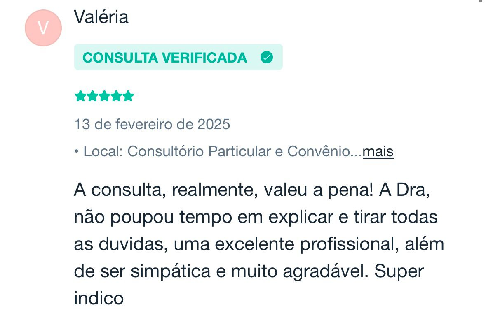
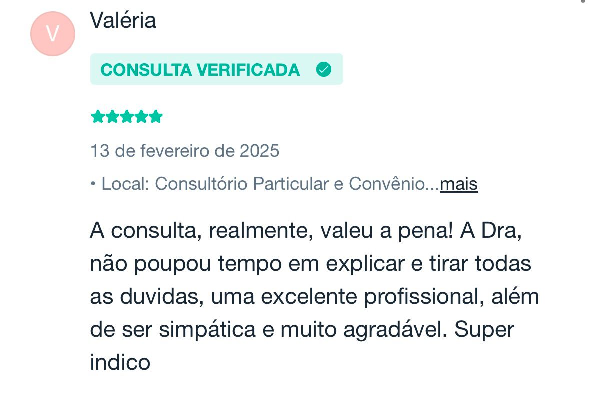
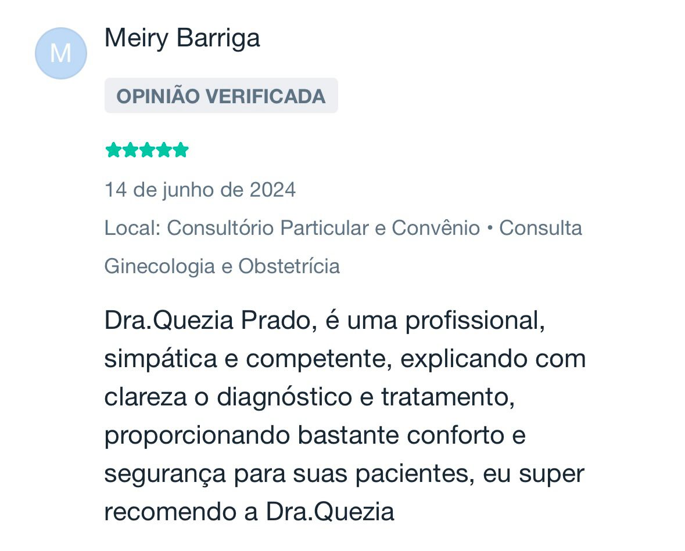
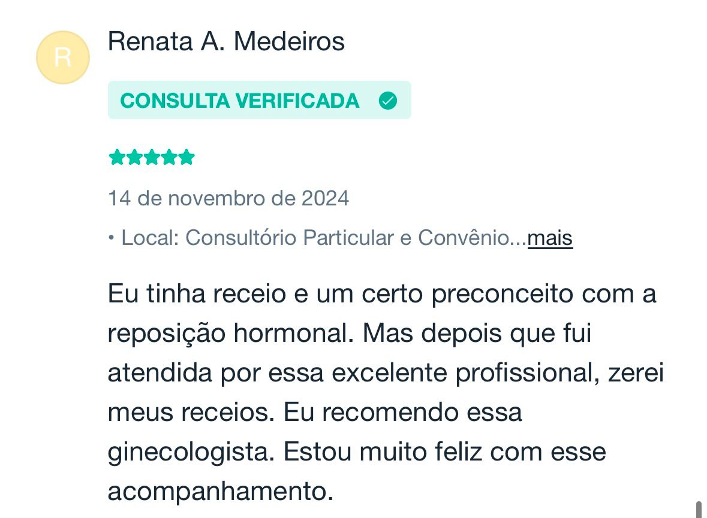
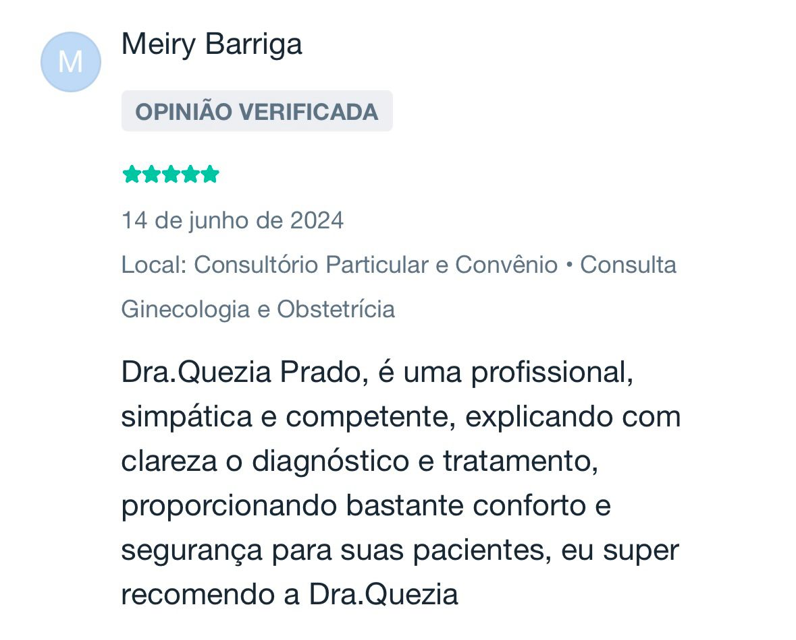
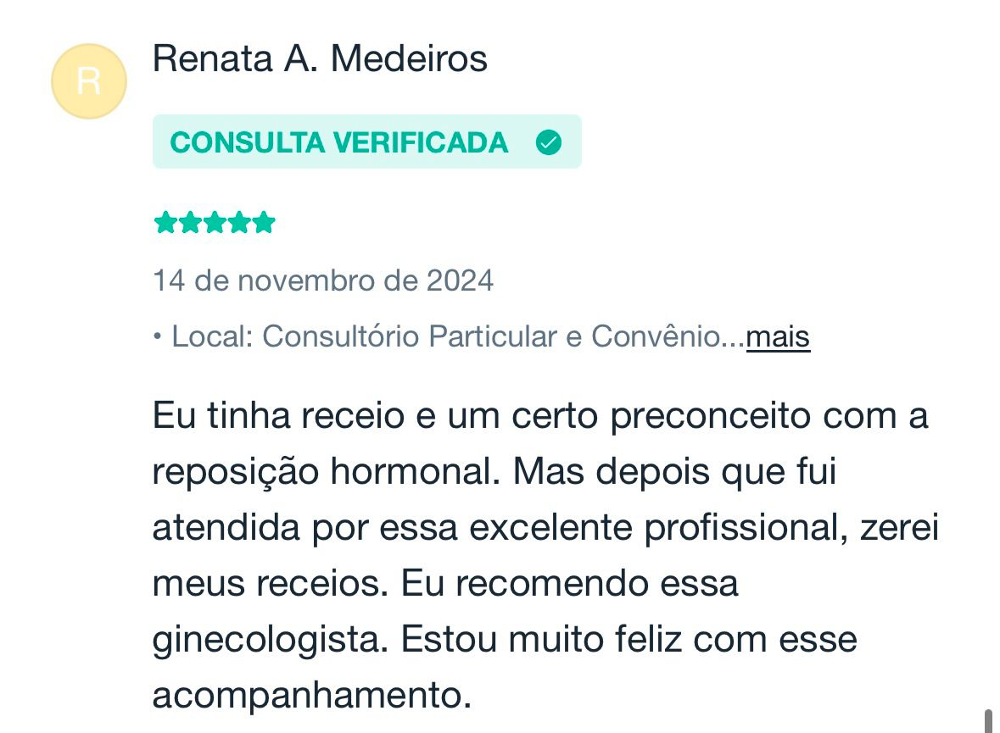

Sobre
Dra. Quezia Prado
Sou a Dra. Quezia, ginecologista e uroginecologista, com formação em Belém-PA e especialização em São Paulo. Minha atuação abrange ginecologia geral, reposição hormonal, envelhecimento saudável, dores pélvicas, planejamento familiar, disfunções do assoalho pélvico e muito mais.
Tenho ampla experiência em cirurgias ginecológicas, além de métodos contraceptivos como DIUs e Implanon. Trato condições como perda urinária, infecções urinárias recorrentes, corrimentos vaginais de repetição, endometriose, miomas, adenomiose, distúrbios hormonais como a síndrome dos ovários policísticos. Planejo com você, uma transição tranquila pelo climatério e menopausa, fazendo a reposição hormonal, quando necessária, e prevenindo todas as condições que podem surgir nesse período.
Meu compromisso é oferecer um atendimento personalizado, promovendo saúde e bem-estar para que cada mulher se sinta bem consigo mesma.
Fiquem à vontade para clicar em um dos assuntos descritos aqui e entenderem um pouco mais sobre cada tema!
Endometriose
Agendar ConsultaA Endometriose é uma condição ginecológica que ocorre quando o tecido que normalmente fica dentro do útero, chamado endométrio, dissemina-se fora dele. Pode haver o acometimento de diversos órgãos pélvicos como ovários, trompas uterinas, intestino, bexiga, e até fora da pelve.
As repercussões da endometriose vão muito além dos sintomas físicos. Embora a dor pélvica crônica seja um dos sinais mais comuns, muitas mulheres podem ter períodos menstruais dolorosos, dor durante ou após a relação sexual, sangramentos excessivos e dificuldade para engravidar. Esses sintomas podem se intensificar conforme a doença avança, afetando diretamente a qualidade de vida.
O impacto emocional da endometriose não deve ser subestimado. A dor constante e a preocupação com a fertilidade muitas vezes geram ansiedade, depressão e sentimentos de frustração. As pacientes podem sentir-se isoladas, já que a doença é muitas vezes invisível para os outros, o que dificulta a compreensão do que elas estão enfrentando. Além disso, a dificuldade em realizar atividades cotidianas devido à dor pode prejudicar o trabalho, os estudos e a vida social, gerando um ciclo de estresse que agrava ainda mais o quadro clínico
O diagnóstico precisa ser feito por um especialista que possa definir a presença da doença e quais órgãos envolvidos para traçar a melhor proposta de tratamento, que deve ser multidisciplinar, e realizado por quem, de fato, entende sobre o assunto, uma vez que a abordagem pode ocorrer com medicações, intervenções cirúrgicas, mudanças no estilo de vida, apoio psicológico e emocional.
Essa condição não se limita à dor física, mas impacta significativamente a vida emocional, social e reprodutiva da mulher. O diagnóstico precoce e um plano de tratamento individualizado são fundamentais para minimizar os efeitos da doença e melhorar a qualidade de vida das pacientes. O acompanhamento ginecológico contínuo e o apoio psicológico são partes essenciais do tratamento, garantindo que as mulheres afetadas possam viver uma vida plena, apesar dos desafios impostos pela endometriose.
Agendar ConsultaFeedbacks


 



 





Contato
Entre em contato para mais informações